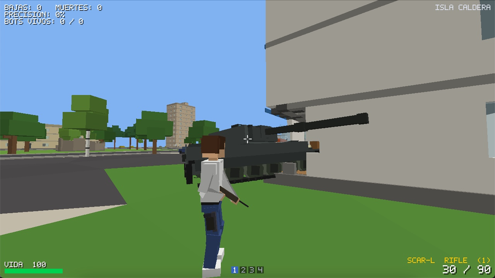
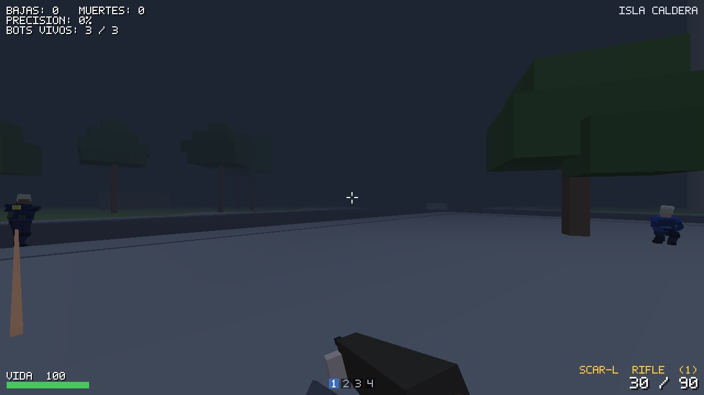
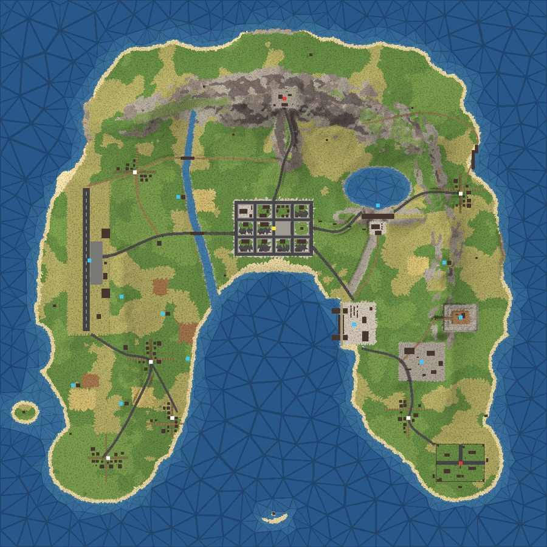
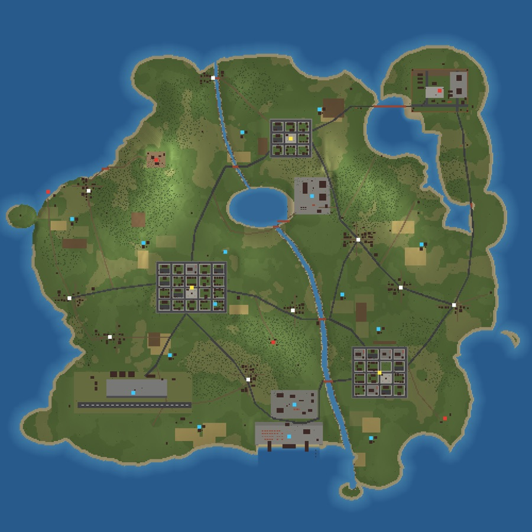

TÁCTICO
DEFUSE
Dos equipos de cinco, rondas sin reaparición y decisiones que cuentan. Comprá equipo, buscá el sitio y plantá —o desactivá— la bomba.
5 VS 5ECONOMÍABOMBA
SHOOTER TÁCTICO · LOW-POLY · EN DESARROLLO
Battle Royale para 100 jugadores, rondas de Defuse y combate libre contra bots. Vehículos, paredes que se rompen y voces que se oyen de donde vienen. Hecho para correr bien en computadoras modestas.

FpsBase es un FPS táctico de geometría low-poly, pensado para que los sistemas de juego —y no una montaña de gráficos— sean el centro.
Mapas, personajes, animaciones y hasta los sonidos se generan con código: la descarga pesa menos de 40 MB y no hace falta instalar nada más para jugarlo.
Elegí tu ritmo: una ronda tensa, un mapa abierto o una pelea que no da tregua. Y antes de empezar, de día o de noche.
Dos equipos de cinco, rondas sin reaparición y decisiones que cuentan. Comprá equipo, buscá el sitio y plantá —o desactivá— la bomba.
Explorá, encontrá armas y enfrentate a bots que patrullan y te persiguen. Caés, reaparecés y volvés a la acción.
Saltá del avión con hasta 99 rivales, aterrizá y armate. Si caés y tu escuadra sigue en pie, arrastrate hasta un compañero para que te levante.
No es solo apuntar y disparar: el mapa se rompe, los vehículos se manejan y el sonido te dice dónde está cada uno.
Un jeep de cuatro puertas, con un asiento por puerta, y un tanque que entra por la escotilla, gira la torreta hacia donde mirás y se lleva puestos árboles, rocas y paredes si viene rápido.
Las explosiones abren agujeros en las paredes, hunden el terreno y dejan todo ennegrecido. Las puertas y los vidrios se rompen a tiros.
Saltá vallas, trepá a pulso hasta donde llegan los brazos, nadá en la superficie o bajo el agua y cuidá el aire. Caer de muy alto duele.
Hablá con quien tengas cerca: la voz se oye en 3D, del lado y a la distancia de quien habla. Con auriculares, los pasos y los disparos también te dicen de dónde vienen.
En escuadras, lo que te mataría te tira al piso: volás, quedás herido y te arrastrás. Un compañero tiene cinco segundos para levantarte.
Elegí ropa, pelo, gorro y colores. Así te ven los demás en línea, con tu nombre arriba de la cabeza para tu escuadra.

Antes de cada partida elegí la hora. De noche, una niebla espesa tapa todo a 45 metros: se pelea de cerca, con más tensión. En línea vale para toda la sala, así nadie ve más lejos que otro. Y en una PC lenta, el modo noche también es el más liviano.
El juego adapta el detalle a la distancia, descarta lo que no ves y, de noche, solo dibuja lo que la niebla deja ver. Todo medido en una MacBook Air de 2015 con gráficos integrados, durante un Battle Royale con 99 bots.
VER REQUISITOSIntel Core i5-5350U, Intel HD Graphics 6000, 8 GB de RAM, a 1280×720 en calidad media. De noche, el procesador usa menos de la mitad por cuadro: 3,1 ms contra 7,1 ms.
Islas, caminos, pueblos, playas y puntos de interés. Y con el editor de mundos, armá los tuyos.


No hace falta instalar nada más: cada descarga ya trae todo lo que necesita. Si tu equipo está por debajo del mínimo, probá igual con el modo noche.
Calidad baja o modo noche, 1280×720.
PROBADO Funciona a 60 FPS en una MacBook Air de 2015 con estas características.
Calidad media con sombras, 1920×1080, Battle Royale lleno.
ESTIMADO Pensado para tener margen de sobra a resoluciones más altas.
Controles táctiles en pantalla.
ESTIMADO En celulares de gama de entrada, activá el modo noche en Opciones → Gráficos.
Descargá la versión para tu equipo, descomprimila y jugá. El proyecto sigue en desarrollo: cada versión trae cosas nuevas.
Windows 10 y 11 de 64 bits. Descomprimí y abrí FpsBase.exe.
Para Mac con procesador Intel, macOS 12 o más nuevo.
DESCARGARAPK para celulares y tablets con Android 6.0 o más nuevo.
DESCARGARAndroid puede pedir permiso para instalar aplicaciones fuera de la tienda, y Windows o macOS pueden avisar que el programa no está firmado. Descargá solo desde este sitio.
Armá escuadra, contanos qué te gustaría ver en el juego y enterate antes que nadie de cada versión nueva.